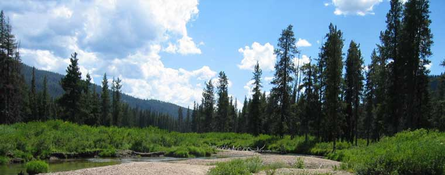

BOISE — Understanding the blizzard of data points that go into Idaho’s response to the coronavirus pandemic, and how those play into decisions on whether the state’s met its criteria to move into each stage of reopening the economy, can be challenging — especially when the numbers seem to change or sometimes seem not to add up. “We continue to make the choice to report the data as soon as we get it,” state Health & Welfare Director Dave Jeppesen told the Idaho Press. That means sometimes numbers are posted, and then they change the next day or the day after. Keep reading
Preston Idaho

Weather Summary
Currently: Sunny
High: 76 °F
Wind Chill: °F
Humidity: 69%
Windspeed: 5 mph
5 Day Forecast
Mon
 46 °F
46 °F
46 °F
Tue
51 °F
51 °F
Wed
52 °F
52 °F
Thu
 54 °F
54 °F
54 °F
Fri
57 °F
57 °F
Understanding the state's COVID-19 data and reopening criteria
The Weather Site
The Weather Site 30 N 1st E Preston, ID 83263 999.999.9999 theweathersite@tws.com